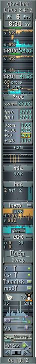
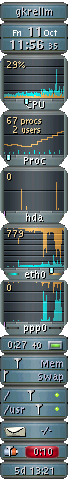

1
|

2
|
Builtin Features
- Hostname/systemname display.
- Clock/calendar.
- SMP CPU monitor that can chart individual CPUs and/or a composite CPU.
- Temperature, fan, and voltage sensor monitors if supported by the
kernel and the mainboard hardware.
Linux requires lm_sensors modules, sysfs sensors for kernels >= 2.6.0
or a running mbmon daemon. Sensors can also be read from mbmon on
FreeBSD. On Linux, you can also monitor disk temperatures from the
hddtemp daemon and nvidia GPU temperatures if nvidia-settings is
installed.
Each sensor monitor has a configurable alarm and warning.
- Process monitor with a chart for load and forks and a display of number
of current processes and users.
- Disk monitor that can chart individual disks or a composite disk.
- Internet monitor (http, ftp, ...) that displays current tcp port
connections and charts historical port hits for over two days.
- Net interface monitors with charts for all routed net interfaces.
Data rx/tx LEDs and a timer button that can
be linked to a ppp or isdn net interface and displays on line time.
- Memory and swap space usage meters, and a swap page in/out chart.
- File system meters which show capacity/free space and can mount/umount.
- A mailbox monitor which can launch a mail reader, a mail fetch/check
program, and a sound notify command. Builtin new mail message checking
for mbox, maildir, MH, POP3, and IMAP mailboxes.
- APM laptop battery meter with a configurable alarm and warning for
low battery time left.
- Uptime display.
- Multiple monitors managed by a single process to reduce system load.
- Charts have auto scaling or fixed scaling modes.
- Commands can be configured to run when monitor labels are clicked.
- gkrellm can run in client mode and collect data from a gkrellmd
server running on a remote machine.
- Both gkrellm and the gkrellmd server are plugin capable so special
interest monitors can be coded.
Screenshots:
1: The CPU chart's nice time (green) is de-emphasized
by splitting it into a small view, and the sys time is inverted.
The disk hda chart is split at the 50% point.
The 5 volt supply is triggering a warning. The animated penguin is
announcing there is new mail.
Three audio plugins are shown enabled:
GKrellMSS sound scope, Volume, and GKrellMMS . See the plugins
page for these and many more interesting plugins.
2: A more simple configuration with nice time hidden and
two net interfaces being monitored. The battery time left
is triggering an alarm. The theme is one I put together as a test
and demo for the new frame overlap features for 2.1.x. So if you
run 2.1.x and like it or want hints on using the new features
in making your own theme, here's the
hardware theme.
And if you're wondering why I call it
"hardware", it's because it has an alternative that looks like
this.
|
{kind=link}